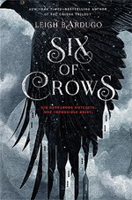
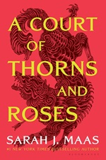
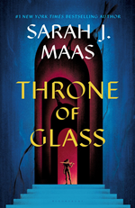
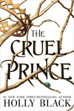
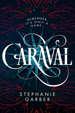
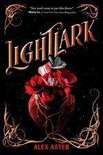

Trends in YA Around 2020
What I refer to as the 2020s era of YA starts in about 2018 and ends in about 2023. Again, this is a range and books that fit this era can be found on either end of this range. Some of the big genres in this era are fantasy romance or “romantasy” as it is now known as and fairytale retellings. These overlapped a lot. This era had a lot of duologies. I’m not sure why duologies were so popular but they were. There’s probably something with the publishing industry, like it’s less of a risk than publishing a trilogy and still gives more time to finish the story or it allows sequels to be published to their bestsellers. Who knows? Not me. There’s a very big focus on the fantasy genre in general during this time period and the main books that are setting the trends are Sarah J. Maas’s books like Throne of Glass and A Court of Thorns and Roses (aka ACOTAR more commonly). Funnily enough, the ACOTAR series is not YA and is no longer marketed as YA. It never should have been marketed as YA. The first book maybe belonged in YA but it was pushing it and everything after it very much does not fit the criteria to be YA. Throne of Glass is definitely on the upper end of the age range for YA but it’s still mostly YA. I have many opinions on these books and very few favourable ones. One of the other main things going on in that era is just fairies, faeries, fae, fey, or whatever your favourite spelling is. An 18-year-old girl falling in love with a 500+ year old immortal man was very popular for these. This was also not uncommon in supernatural romance of the 2010s era but they’re in a more of a high fantasy setting now instead of an urban fantasy setting.
As far as characters go for this era, there were still a lot of characters that are so perfect or just blank enough for readers to project onto them. “Morally grey” characters gained popularity, particularly for love interests. The “morally grey” characters were rarely truly morally grey. They were normally just morally wrong. However, books started to get more diverse and with that, the characters in them. Books with LGBTQ+ and BIPOC characters could be found more easily. Still not as easily as cishet white characters, but it was an improvement from the 2010s era. Another thing in this period is that mental health started to be represented more casually in fantasy YA. The main character can happen to have a mental health issue without the book being about that. The main characters tended to be more capable and closer to self assured. There was a lot more of the “I don’t need a man to protect me and keep me safe” attitude to be found. Love interests were still protective generally and the same love triangles could still be found, but now there was some books where there was no love triangle. A revolutionary concept, I know. The love interests were still protective and possessive but they were also okay with the main character committing horrible acts of violence and other such crimes. Enemies to lovers was a very popular trope during this time but as that progressed, the enemies to lovers strayed from what that actually was. It turned into more of something like “Oh they don’t really like each other” or “Oh, he’s incredibly rude and cruel to her, but it’s okay because he was in love with her the whole time and trying to hide it.” Those can both be found in 2010s YA too.
Something that I think is important to point out is that 2020s YA is a development of 2010s YA. Without 2010s YA, 2020s YA would not be as it is. The most common character types, the tropes, the settings, the genres, these all influence what comes afterwards. These are from the trends in the publishing industry because the books available to read depend on what the publishing industry thinks will sell. 2010s YA had one set of trends and 2020s YA had another set of trends, but 2010s YA trends influenced 2020s YA trends. Without 2010s YA, 2020s YA would look very different. I don’t know what it would look like, but it would look different.
Another trend in 2020s YA was to have a fantasy setting but the fantasy took a back seat to the character’s drama unless the fantasy helped progress the plot. The fantasy was often used as a background to the romance with the romance being the main plot. In the books where the main plot wasn’t romance, it often was some sort of political intrigue or a quest. By political intrigue, that often involved some sort of drama involving royal families. A secret heir, a traitorous relative, a traitorous advisor, etc. Quests sometimes overlapped with the political intrigue and the person had to go on some sort of quest to solve the political intrigue. Quests weren’t always directly called quests, but the characters tended to have some sort of goal they were trying to accomplish, a quest they were working towards succeeding at. They tended to have a bit more agency and took more action in their stories.
This era in YA was the same time as the rise of OwnVoices. Readers started calling for more representation in books and for the publishing industry to do better. Readers also started looking for books with representation of minorities written by someone of that minority group. Any books that weren’t OwnVoices were at risk of being called out in online discourse on Bookstagram or Booktok for bad representation. The discourse for this tended to be that if you weren’t the minority you were writing, you were going to write them inaccurately. Only LGBTQ+ authors could accurately write LGBTQ+ characters. Only BIPOC authors could accurately write BIPOC characters. Again, this gets into trying to control what people write, which is a problem. However, it also means that overall, there will be less representation written. There are ways for straight cisgender people to write LGBTQ+ characters accurately. Sensitivity readers to check for accuracy and sensitivity is one way. Doing proper research and talking to the group you’re trying to write is another way. One clarification some people would make was that if you were white, you could write a Black character, but you couldn’t write about being Black. This doesn’t apply to that situation only but that concept in general could be applicable. But to some people, those were unacceptable and if you wrote a character that was a minority you weren’t, you would get attacked online. OwnVoices is important and letting people tell their stories is important but the conversations around this were rarely productive in any way.
Notable examples:
- Six of Crows
 - A Court of Thorns and Roses
 - Throne of Glass
 - The Cruel Prince
 - Caraval
 - Lightlark
